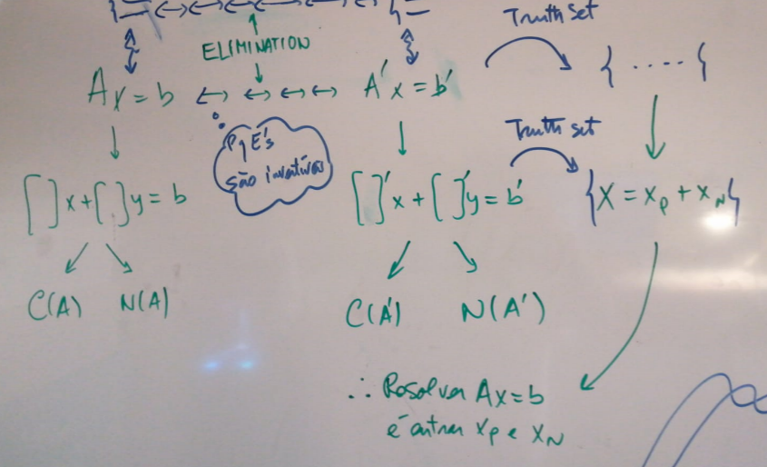

Two special subspaces
From a system of equation we obtained a matrix. In this section we will see how matrices define two important subspaces: the column space and nullspace of a matrix.
Nullspace of a matrix (kernel of a linear function)
The nullspace of the matrix is the vector space generated by all solutions \(\mathbf{x}_N\) of the equation:
\[ A\mathbf{x}_N=\mathbf{0} \]
This equation is exactly the same as out test for independence/dependence!
Consider again the matrix
\[ A=\begin{pmatrix}1 & 2 & 2 & 2 \\2 & 4 & 6 & 8 \\3 & 6 & 8 & 10 \end{pmatrix} \]
Solving we find:
\[ \begin{align}&\begin{pmatrix}1 & 2 & 2 & 2 &\bigm|0\\2 & 4 & 6 & 8 &\bigm|0\\3 & 6 & 8 & 10 &\bigm| 0\end{pmatrix}\overset{l_2' = l_2-2l_1}{\longrightarrow}\begin{pmatrix}1 & 2 & 2 & 2 &\bigm| 0\\0 & 0 & 2 & 4 &\bigm| 0\\3 & 6 & 8 & 10 &\bigm| 0\end{pmatrix}\overset{l_3' = l_3-3l_1}{\longrightarrow}\begin{pmatrix}1 & 2 & 2 & 2 &\bigm| 0\\0 & 0 & 2 & 4 &\bigm| 0\\0 & 0 & 2 & 4 &\bigm| 0\end{pmatrix}\\&\overset{l_3'=l_3-l_2}{\longrightarrow}\begin{pmatrix}1 & 2 & 2 & 2 &\bigm| 0\\0 & 0 & 2 & 4 &\bigm| 0\\0 & 0 & 0 & 0 &\bigm| 0\end{pmatrix}\overset{l_2'=1/2l_2}{\longrightarrow}\begin{pmatrix}1 & 2 & 2 & 2 &\bigm| 0\\0 & 0 & 1 & 2 &\bigm| 0\\0 & 0 & 0 & 0 &\bigm| 0\end{pmatrix}\overset{l_1'=l_1-2l_2}{\longrightarrow}\begin{pmatrix}\mathbf{1} & 2 & 0 & -2 &\bigm| 0\\0 & 0 & \mathbf{1} & 2 &\bigm| 0\\0 & 0 & 0 & 0 &\bigm| 0\end{pmatrix}\end{align} \tag{1}\]
By looking at the simplified system \(A'\) we see column 2 and column 4 depend on column 1 and 3. (focus on the pivots)
Important observation: the same column dependence found in \(A'\) holds for the columns of \(A\).
We can solve this problem in two other ways:
way 1: In summary, use back substitution and promote the necessary variables to parameters.As an example, translate Equation 1 into the old notation set the free variables \(y_N\) and \(w_N\) as the parameters \(a\) and \(b\) respectively then solve for the dependent variables \(x_N\) and \(z_N\):
\[ \begin{cases} x_N+2y_N-2w_N=0\\ z_N+2w_N =0\\ y_N=a\\ w_N = b \end{cases} \implies \begin{cases} x_N=-2a+2b\\ z_N = -2b\\y_N=a\\ w_N = b \end{cases} \implies \begin{pmatrix} x_N\\y_N\\z_N\\w_N \end{pmatrix} = a \begin{pmatrix} -2\\1\\0\\0 \end{pmatrix} + b \begin{pmatrix} 2\\0\\-2\\1 \end{pmatrix} \]
way 2: To find solutions of this system, choose (any) values for the free variables \(y_N\) and \(w_N\) and then solve for \(x_N\) and \(z_N\). Why is this a good strategy? Since the \(col_2\) and \(col_4\) are dependent on \(col_1\) and \(col_3\) then \(y_N\times col_1\) and \(w_n \times col_4\) are also dependent, and thus we can find the appropriate \(x_N\) and \(z_N\) to cancel them.
When choosing freely, at least choose something that simplify your calculations, for example set \(y_N=1\) and \(w_N=0\) and guess what is \(x_N\) and \(z_N\), we get:
\[ \mathbf{x}_N =\begin{pmatrix}-2\\1\\0\\0 \end{pmatrix} \]
Now substitute \(y_N=0\) and \(w_N=1\) and guess the corresponding \(x_N\) and \(z_N\); the answer gives us:
\[ \mathbf{x}_N=\begin{pmatrix}2\\0\\-2\\1\end{pmatrix} \]
Notice we did this twice because there are two free columns (dependent columns to cancel with the independent one)
The nullspace of the matrix \(A\) is composed by all linear combinations:
\[ a\begin{pmatrix}-2\\1\\0\\0 \end{pmatrix} +b\begin{pmatrix}2\\0\\-2\\1 \end{pmatrix} \]
These two vectors constitute a basis for it.
Either way 1 or 2 gives the same answer:
\[ a\begin{pmatrix}-2\\1\\0\\0\end{pmatrix}+b\begin{pmatrix}2\\0\\-2\\1\end{pmatrix} \]
The nullspace of \(A\) and its basis:
\[ N(A) = span\{(-2,1,0,0),(2,0,-2,1)\} \]
The way 1 and 2 are essentially the same, on 2 we choose specific values for the free variables and compute the corresponding non-free variables to get specific solution, which are then multiplied by \(a\) and \(b\); on way 1 we choose arbitrary values for the free variables and then solve for the non-free.
Columns Space of a Matrix (image of a linear function)
The column space is the vector space that is generated by taking all linear combinations of the columns of a matrix. For example, the column space \(C(A)\) of the matrix:
\[ A=\begin{pmatrix}1 & 2 & 2 & 2 \\2 & 4 & 6 & 8 \\3 & 6 & 8 & 10 \end{pmatrix} \tag{2}\]
is generated by
\[ C(A)=span\{\begin{pmatrix} 1\\2\\3 \end{pmatrix} , \begin{pmatrix}2\\4\\6\end{pmatrix} , \begin{pmatrix}2\\6\\8\end{pmatrix} , \begin{pmatrix}2\\8\\10\end{pmatrix}\} \]
It may happen, and it is the case as we shall see, that we need not all the columns of \(A\) to generate \(C(A)\), the reason being, some of the column vectors may depend on other columns, thus not providing no additional information. In other words, the columns of \(A\) may or not constitute a basis for \(C(A)\). Thus we also do not know, yet, the dimensionality of this space.
To construct a basis for \(C(A)\) we have to identify which column or columns are dependent and which are independent, we found by inspecting the \(\text{rref} A\) in Equation 1, we know the column 1 and 3 are independent, hence the basis for the column space:
\[ C(A)=span\{ \begin{pmatrix}1\\2\\3\end{pmatrix},\begin{pmatrix}2\\6\\8\end{pmatrix}\} \]
The column space of \(A\) is different from that of \(\text{rref}\,A\).
Conclusion
The nullspace is the set of solutions of \(A\mathbf{x}_N=\mathbf{0}\), which we compute by simplifying the matrix \(A\) to the point \(A'\) (=rref of \(A\)) where we can see the dependent columns.
By knowing in \(A'\) which columns are dependent, we know which ones are independent, the corresponding columns in \(A\) in turn span the column space.
\(\dim C(A) +\dim N(A) = m\), where \(m\) is the number of columns. It will be better intuitively to write \(\dim C(A^\intercal) +\dim N(A) = m\) as we shall see later.
Exercises: 1.5.11,12
